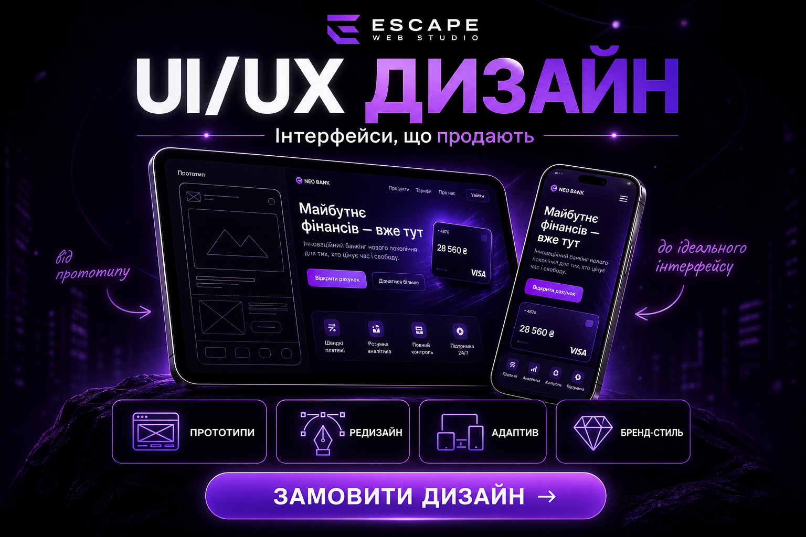

UI/UX дизайн — інтерфейси, що продають
Від прототипу до ідеального інтерфейсу — ми створюємо дизайн, який не просто красивий, а конвертує.
UI/UX дизайн — це не «прикраса». Це продуманий шлях користувача від першого кліку до заявки. Гарний інтерфейс підвищує довіру, знижує відмови та збільшує продажі.
4 напрямки UI/UX від Escape
- Прототипи — wireframe та макети до початку розробки.
- Редизайн — оновлення застарілого сайту до сучасного рівня.
- Адаптив — ідеальний вигляд на десктопі, планшеті та смартфоні.
- Бренд-стиль — єдина візуальна мова для всіх точок контакту.
Процес роботи
- дослідження цільової аудиторії та конкурентів;
- створення прототипу та узгодження структури;
- розробка UI-дизайну з урахуванням бренду;
- тестування UX на зручність та конверсію;
- передача макетів у розробку з детальним ТЗ.
Ми проєктуємо інтерфейси на рівні топ-агенцій — кожен елемент продуманий під цільову дію користувача.